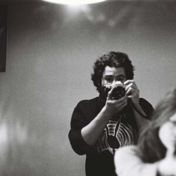

<p>Pablo Álvarez-Hornia is a writer, director, photographer and editor based in London and Madrid.</p>
<div class="social_media">
    <a href="https://www.instagram.com/almostpablo" target="_blank" rel="noopener noreferrer">
        <i class="fab fa-instagram"></i>
      </a>
      <a href="https://x.com/alvarezhornia?mx=2" target="_blank" rel="noopener noreferrer">
        <i class="fab fa-twitter"></i>
      </a>
      <a href="https://www.imdb.com/name/nm9874461/" target="_blank" rel="noopener noreferrer">
        <i class="fab fa-imdb"></i>
      </a>
      <a href="https://mubi.com/en/cast/pablo-alvarez-hornia?castSlug=pablo-alvarez-hornia" target="_blank" rel="noopener noreferrer">
        <svg class="social-icon" role="img" viewBox="0 0 24 24" xmlns="http://www.w3.org/2000/svg"><title>MUBI</title><path d="M3.357.033A3.357 3.357 0 0 0 0 3.39a3.357 3.357 0 0 0 3.357 3.357A3.357 3.357 0 0 0 6.713 3.39 3.357 3.357 0 0 0 3.357.033Zm8.643 0A3.357 3.357 0 0 0 8.645 3.39 3.357 3.357 0 0 0 12 6.746a3.357 3.357 0 0 0 3.357-3.357A3.357 3.357 0 0 0 12 .033Zm-8.643 8.61A3.357 3.357 0 0 0 0 12a3.357 3.357 0 0 0 3.357 3.355A3.357 3.357 0 0 0 6.713 12a3.357 3.357 0 0 0-3.356-3.357Zm8.643 0A3.357 3.357 0 0 0 8.645 12 3.357 3.357 0 0 0 12 15.355 3.357 3.357 0 0 0 15.357 12 3.357 3.357 0 0 0 12 8.643zm8.643 0A3.357 3.357 0 0 0 17.287 12a3.357 3.357 0 0 0 3.356 3.355A3.357 3.357 0 0 0 24 12a3.357 3.357 0 0 0-3.357-3.357Zm-17.286 8.61A3.357 3.357 0 0 0 0 20.612a3.357 3.357 0 0 0 3.357 3.356 3.357 3.357 0 0 0 3.356-3.356 3.357 3.357 0 0 0-3.356-3.357Zm8.643 0a3.357 3.357 0 0 0-3.355 3.358A3.357 3.357 0 0 0 12 23.967a3.357 3.357 0 0 0 3.357-3.356A3.357 3.357 0 0 0 12 17.254z"/></svg>
      </a>
</div>